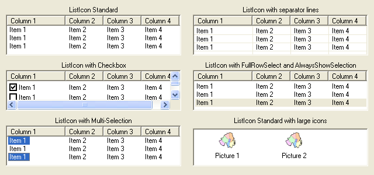

ListIconGadget()
Syntax
Result = ListIconGadget(#Gadget, x, y, Width, Height, FirstColumnTitle$, FirstColumnWidth [, Flags])Description
Creates a ListIcon gadget in the current GadgetList.
Parameters
#Gadget A number to identify the new gadget. #PB_Any can be used to auto-generate this number. x, y, Width, Height The position and dimensions of the new gadget. FirstColumnTitle$ The title for the first column in the gadget. The gadget is created with one initial column. FirstColumnWidth The width of the first column in the gadget. Flags (optional) Flags to modify the gadget behavior. It can be a combination of the following values: #PB_ListIcon_CheckBoxes : Display checkboxes in the first column. #PB_ListIcon_ThreeState : The checkboxes can have an "in between" state. #PB_ListIcon_MultiSelect : Enable multiple selection. #PB_ListIcon_GridLines : Display separator lines between rows and columns (not supported on Mac OSX). #PB_ListIcon_FullRowSelect : The selection covers the full row instead of the first column (Windows only). #PB_ListIcon_HeaderDragDrop : The order of columns can be changed using drag'n'drop. #PB_ListIcon_AlwaysShowSelection: The selection is still visible, even when the gadget is not activated (Windows only).The #PB_ListIcon_ThreeState flag can be used in combination with the #PB_ListIcon_CheckBoxes flag to get checkboxes that can have an "on", "off" and "in between" state. The user can only select the "on" or "off" states. The "in between" state can be set programmatically using the SetGadgetItemState() function.
Return value
Returns nonzero on success and zero on failure. If #PB_Any was used as the #Gadget parameter then the return-value is the auto-generated gadget number on success.
Remarks
A 'mini help' can be added to this gadget using GadgetToolTip().
The following functions can be used to act on the list content:
- AddGadgetColumn(): Add a column to the gadget.
- RemoveGadgetColumn(): Remove a column from the gadget.
- AddGadgetItem(): Add an item (with an optional image in the standard 16x16 icon size).
- RemoveGadgetItem(): Remove an item.
- ClearGadgetItems(): Remove all the items.
- CountGadgetItems(): Returns the number of items currently in the #Gadget.
- GetGadgetItemColor(): Returns front or backcolor of the item.
- SetGadgetItemColor(): Changes front or backcolor of the item (backcolor not supported on MacOS X).
- GetGadgetItemData(): Returns the value that was stored with item.
- SetGadgetItemData(): Stores a value with the item.
- GetGadgetItemState(): Returns the current state of the specified item.
- SetGadgetItemState(): Changes the current state of the specified item.
- GetGadgetItemText(): Returns the current text of the specified item. (or column header, if item = -1)
- SetGadgetItemText(): Changes the current text of the specified item. (or column header, if item = -1). Like with AddGadgetItem(), it is possible to set the text for several columns at once, with the Chr(10) separator.
- SetGadgetItemImage(): Changes the current image of the specified item.
- GetGadgetState(): Returns the first selected item or -1 if there is no item selected.
- SetGadgetState(): Change the selected item (all other selected items will be deselected). If -1 is specified, no more item will be selected.
- GetGadgetAttribute() / SetGadgetAttribute(): With the following attribute:#PB_ListIcon_DisplayMode : Changes the display of the gadget. Can be one of the following constants (Windows only): #PB_ListIcon_LargeIcon: Large icon mode #PB_ListIcon_SmallIcon: Small icon mode #PB_ListIcon_List : List icon mode #PB_ListIcon_Report : Report mode (columns, default mode)
- GetGadgetItemAttribute() / SetGadgetItemAttribute(): With the following attribute:#PB_ListIcon_ColumnWidth : Returns/Changes the width of the given 'Column'. The 'Item' parameter is ignored.This gadget supports the SetGadgetColor() and GetGadgetColor() functions with the following values as 'ColorType':#PB_Gadget_FrontColor: Textcolor #PB_Gadget_BackColor : Backgroundcolor #PB_Gadget_LineColor : Color for the gridlines if the #PB_ListIcon_GridLines flag is used.The following events are supported through EventType():#PB_EventType_LeftClick: left click on an item, or a checkbox was checked/unchecked #PB_EventType_LeftDoubleClick #PB_EventType_RightClick #PB_EventType_RightDoubleClick #PB_EventType_Change: the current item changed #PB_EventType_DragStart: the user tried to start a Drag & Drop operation.After a #PB_EventType_DragStart event, the Drag & Drop library can be used to start a Drag & Drop operation.
Example
If OpenWindow(0, 100, 100, 300, 100, "ListIcon Example", #PB_Window_SystemMenu | #PB_Window_ScreenCentered)
ListIconGadget(0, 5, 5, 290, 90, "Name", 100, #PB_ListIcon_FullRowSelect | #PB_ListIcon_AlwaysShowSelection)
AddGadgetColumn(0, 1, "Address", 250)
AddGadgetItem(0, -1, "Harry Rannit"+Chr(10)+"12 Parliament Way, Battle Street, By the Bay")
AddGadgetItem(0, -1, "Ginger Brokeit"+Chr(10)+"130 PureBasic Road, BigTown, CodeCity")
Repeat
Event = WaitWindowEvent()
Until Event = #PB_Event_CloseWindow
EndIf
Example
; Shows possible flags of ListIconGadget in action... If OpenWindow(0, 0, 0, 640, 300, "ListIconGadgets", #PB_Window_SystemMenu | #PB_Window_ScreenCentered) ; left column TextGadget (6, 10, 10, 300, 20, "ListIcon Standard", #PB_Text_Center) ListIconGadget(0, 10, 25, 300, 70, "Column 1", 100) TextGadget (7, 10, 105, 300, 20, "ListIcon with Checkbox", #PB_Text_Center) ListIconGadget(1, 10, 120, 300, 70, "Column 1", 100, #PB_ListIcon_CheckBoxes) ; ListIcon with checkbox TextGadget (8, 10, 200, 300, 20, "ListIcon with Multi-Selection", #PB_Text_Center) ListIconGadget(2, 10, 215, 300, 70, "Column 1", 100, #PB_ListIcon_MultiSelect) ; ListIcon with multi-selection ; right column TextGadget (9, 330, 10, 300, 20, "ListIcon with separator lines",#PB_Text_Center) ListIconGadget(3, 330, 25, 300, 70, "Column 1", 100, #PB_ListIcon_GridLines) TextGadget (10, 330, 105, 300, 20, "ListIcon with FullRowSelect and AlwaysShowSelection",#PB_Text_Center) ListIconGadget(4, 330, 120, 300, 70, "Column 1", 100, #PB_ListIcon_FullRowSelect | #PB_ListIcon_AlwaysShowSelection) TextGadget (11, 330, 200, 300, 20, "ListIcon Standard with large icons",#PB_Text_Center) ListIconGadget(5, 330, 220, 300, 65, "", 200,#PB_ListIcon_GridLines) For a = 0 To 4 ; add columns to each of the first 5 listicons For b = 2 To 4 ; add 3 more columns to each listicon AddGadgetColumn(a, b, "Column " + Str(b), 65) Next For b = 0 To 2 ; add 4 items to each line of the listicons AddGadgetItem(a, b, "Item 1"+Chr(10)+"Item 2"+Chr(10)+"Item 3"+Chr(10)+"Item 4") Next Next ; Here we change the ListIcon display to large icons and show an image If LoadImage(0, #PB_Compiler_Home+"Examples\Sources\Data\File.bmp") ; change path/filename to your own 32x32 pixel image SetGadgetAttribute(5, #PB_ListIcon_DisplayMode, #PB_ListIcon_LargeIcon) AddGadgetItem(5, 1, "Picture 1", ImageID(0)) AddGadgetItem(5, 2, "Picture 2", ImageID(0)) EndIf Repeat : Until WaitWindowEvent() = #PB_Event_CloseWindow EndIf
See Also
AddGadgetColumn(), RemoveGadgetColumn(), AddGadgetItem(), RemoveGadgetItem(), ClearGadgetItems(), CountGadgetItems(), GetGadgetState(), SetGadgetState(), GetGadgetAttribute(), SetGadgetAttribute(), GetGadgetItemText(), SetGadgetItemText(), SetGadgetItemImage(), GetGadgetItemState(), SetGadgetItemState(), GetGadgetItemData(), SetGadgetItemData(), GetGadgetItemAttribute(), SetGadgetItemAttribute(), GetGadgetColor(), SetGadgetColor(), GetGadgetItemColor(), SetGadgetItemColor(), ExplorerListGadget(), ListViewGadget()
Supported OS
All